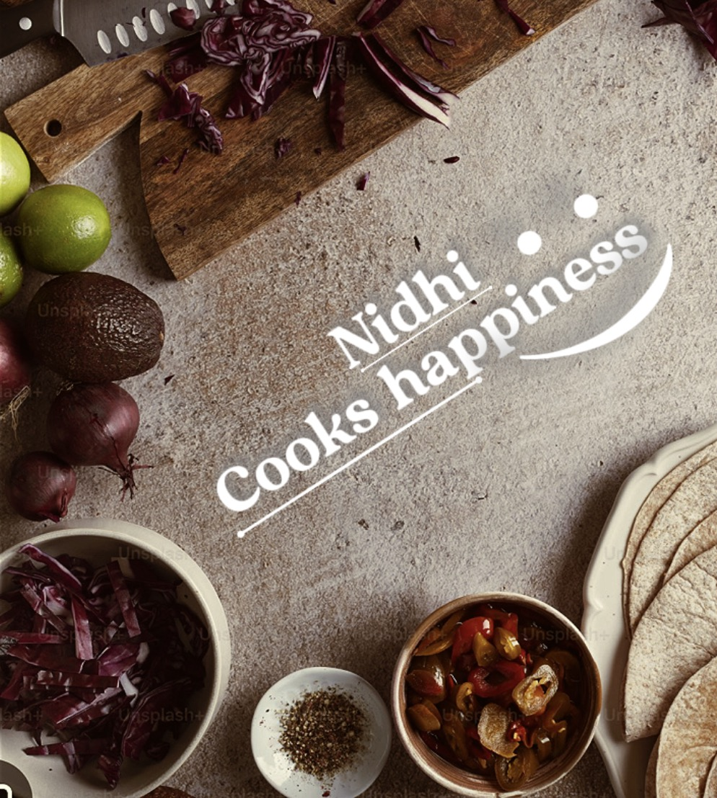

Everyday Meals
Simple recipes for busy days.

A LITTLE ABOUT US
Welcome to Nidhi Cooks Happiness — a cosy corner for homemade recipes, Indian classics, everyday meals, snacks, sweets and family favourites.
— Nidhi
WHAT'S COOKING
Simple recipes for busy days.
Comforting homemade favourites.
Little treats for every occasion.
Big flavour without the fuss.
FROM THE CHANNEL
STAY CONNECTED